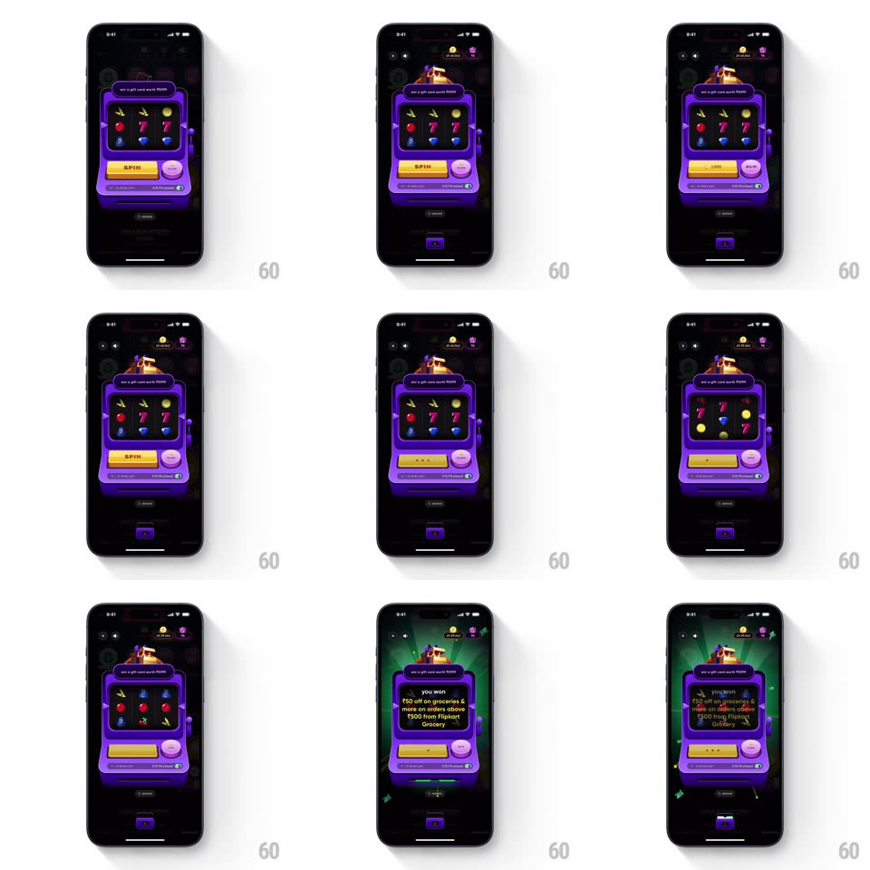

Media
Frame-by-frame

Rebuild this interaction 1:1: CRED's jackpot machine - tapping SPIN sends the slot machine's three reels into a blurred vertical spin, decelerating one by one with a bounce, before the machine's face flips open to reveal the reward.

Rebuild this interaction 1:1: CRED's jackpot machine - tapping SPIN sends the slot machine's three reels into a blurred vertical spin, decelerating one by one with a bounce, before the machine's face flips open to reveal the reward.
## Integration
Integration: stack-agnostic spec - springs given as stiffness/damping, timed motions as duration + curve; map every value to your framework and animation library of choice.
## Scene
CRED's dark rewards screen with a purple 3D slot-machine card ("win a gift card worth ₹500"): three symbol reels (gems, 7s, fruit), a gold SPIN button and a pink coin button, and a reward panel that appears on the machine face.
## Motion spec
Pattern: staggered reel spin with tactile stops, ~2.2s spin.
- Pull: SPIN presses (scale 0.95, 100ms) and the machine lever/handle jolts; the machine does a tiny anticipation tilt (rotate -1.5deg -> 0, 200ms).
- Spin: all three reels accelerate into a vertical blur (symbols streak, motion blur or rapid scroll, reaching full speed in 300ms).
- Stops: reels stop left to right, 450ms apart; each stop decelerates and overshoots a few pixels then settles (spring ~240/18) with a soft thud frame.
- Win: matching symbols flash (opacity pulse x3, 150ms each) and a green glow rays burst behind the machine (scale 0.6 -> 1.3 + fade, 500ms).
- Reveal: the machine's face flips (rotateY) or expands into the reward panel ("you won ₹50 off on groceries...") with a bounce (spring ~300/16, 400ms).
## Calibration
- Reels never stop simultaneously - the left-to-right cadence builds suspense.
- The blur sells the speed; crisp symbols only at rest.
## Reduced motion
Reels crossfade to the result; no spin cycle.
## Don't miss
- The machine is dimensional - highlights and shadows hold during the tilt.
- The reward reveal replaces the reel window on the same machine, not a separate modal.